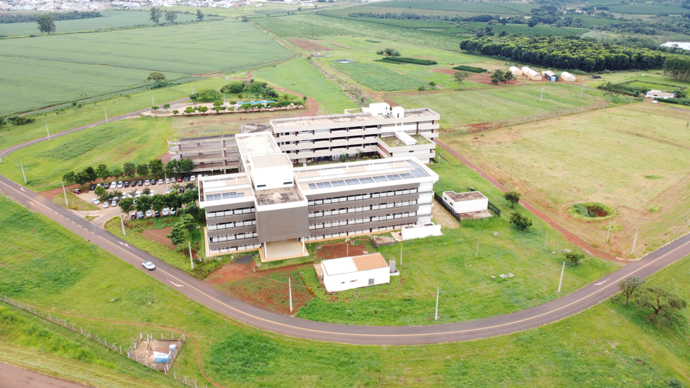

Apresentação
A TechnoMonte é um evento vinculado ao curso de Bacharelado em Sistemas de Informação – Monte Carmelo, da Faculdade de Computação (FACOM) da Universidade Federal de Uberlândia (UFU), que tem como propósito promover a integração entre a universidade, a comunidade, o setor empresarial e os profissionais da área de Tecnologia da Informação (TI) da região de Monte Carmelo. O evento será estruturado como um espaço de compartilhamento de conhecimentos, experiências e oportunidades relacionadas à tecnologia, contemplando atividades como palestras, minicursos, workshops, mesas-redondas, demonstrações e outras ações de caráter formativo e interativo.
As atividades abordarão temas atuais e relevantes das áreas de computação, sistemas de informação, desenvolvimento de software, inteligência artificial, dados, segurança, inovação e demais tecnologias emergentes. O público-alvo será composto por estudantes do curso de Bacharelado em Sistemas de Informação – Monte Carmelo (FACOM/UFU), estudantes do curso de Bacharelado em Ciência da Computação da UNIFUCAMP, além de membros da comunidade, empresas, profissionais da área de TI e entusiastas de tecnologia da região de Monte Carmelo.
Por meio da realização da TechnoMonte, busca-se ampliar as oportunidades de formação complementar dos estudantes, aproximar a comunidade acadêmica das demandas e tendências do mercado de trabalho, estimular a troca de experiências entre diferentes atores do ecossistema tecnológico e fortalecer a presença da universidade como agente de transformação e desenvolvimento regional.
Dessa forma, o evento contribui para a popularização do conhecimento tecnológico, a formação profissional, a inovação e a aproximação entre universidade, sociedade e mercado, promovendo um ambiente colaborativo de aprendizagem e networking.
Localização
O evento será realizado de forma presencial e online.
- As atividades presenciais ocorrerão no Campus Monte Carmelo - Araras - Universidade Federal de Uberlândia.
- As transmissões online serão informadas no formulário de inscrição da atividade.
